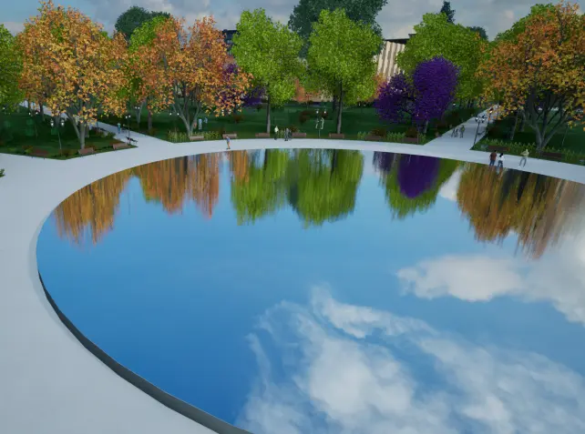

Parque Reflejo del Cielo
Este proyecto partió de la idea de diseño del cielo, partiendo de este concepto se implementaron en la estética y disposición distintos elementos del cielo. Se dispusieron la vegetación de forma de que sus distintas coloraciones, tanto en virajes como en floración y follaje, en conjunto generaran la transición de un amanecer al anochecer.
El diseño de este parque se desarrolló en torno a un elemento focal, una superficie reflectante que por medio de una ligera pulverización en formato de lluvia generaba el reflejo del cielo y de las copas de los árboles; permitiendo dar un sentido más literal a la idea de diseño. La trama del parque se destacó por la colocación de elementos en torno al espejo al cielo en forma de circulos concéntricos al mismo.
